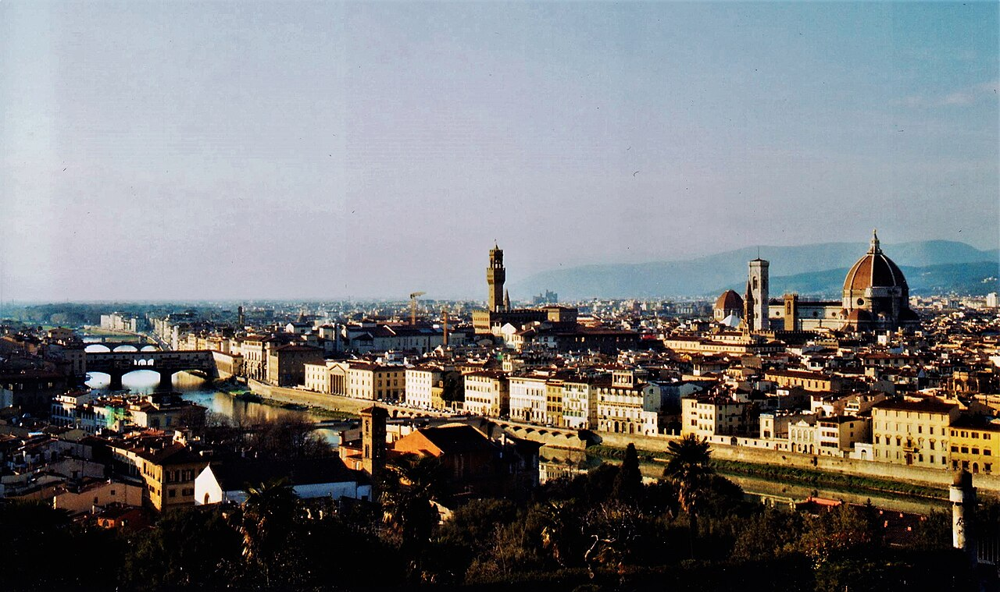

Tuscany, Italy
Florence
on Foot
From Brunelleschi’s dome to sunset above the Arno. Pick your stops and make a day of it.
Explore the map
The city guide
Find your stops
Choose a pin or filter by interest.
Illustrated map · distances approximate
Your walking plan
My itinerary
Start with a themed walk or add your own stops from the map. Stops stay saved in this browser.